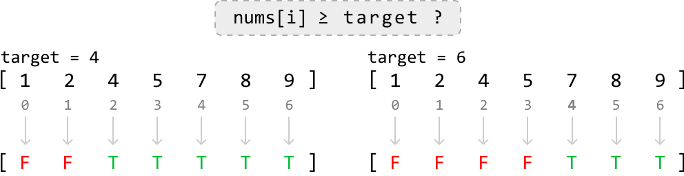

Find the Insertion Index
MediumYou are given a sorted array that contains unique values, along with an integer target.
- If the array contains the target value, return its index.
- Otherwise, return the insertion index. This is the index where the target would be if it were inserted in order, maintaining the sorted sequence of the array.
Example 1:
Input: nums = [1, 2, 4, 5, 7, 8, 9], target = 4
Output: 2
Example 2:
Input: nums = [1, 2, 4, 5, 7, 8, 9], target = 6
Output: 4
Explanation: 6 would be inserted at index 4 to be positioned between 5 and 7: [1, 2, 4, 5, 6, 7, 8, 9].
Intuition
The goal of this problem varies depending on whether the sorted input array contains the target value or not. If it does, we should return its index. If it doesn’t, we return its insertion index.
![Image represents two scenarios illustrating a search or insertion operation within a sorted integer array. The left side, titled 'case 1 - target exists in array:', shows an array `[1, 2, 4, 5, 7, 8, 9]` with indices displayed below each element (0-6). The target value, 4, is highlighted in a light green circle at index 2. The right side, titled 'case 2 - target not in array:', displays the array `[1, 2, 4, 5, 7, 8, 9]` with indices (0-6) similarly shown. Here, the target value is 6, which is not present. A light green circle highlights the index 4, indicating where the target value *would* be inserted to maintain the sorted order. A green upward-pointing arrow labeled 'insertion index' points to this highlighted index (4) in the second array. Both cases demonstrate how a target value's presence or absence affects the outcome of a search or insertion algorithm within a sorted array.](images/06_01_find-the-insertion-index-img-fc97a544.svg)
When the target doesn’t exist in the array, we observe the insertion index is found at the first value in the array greater than the target, as can be seen in the second diagram above, where the first value larger than the target of 6, is 7.
Since we don’t know if the target exists in the array before we start looking for it, we can combine both cases by finding the first value greater than or equal to the target. This gives us a universal objective regardless of whether the target is in the array or not.
As the array is sorted, we can use binary search to find the desired index.
Binary search
In this binary search, we’re effectively looking for the first value that matches a condition, where the condition is that the number is greater than or equal to the target. Let’s visualize which values of the array meet this condition and which don’t:

= target ?`, indicating a comparison where each element (`nums[i]`) of an array `nums` is checked against a `target` value. Below are two examples. Each example shows an array of numbers ([1, 2, 4, 5, 7, 8, 9]) and a specified `target` value (4 in the first example and 6 in the second). Underneath each array, a corresponding array of 'F' (False) and 'T' (True) values is shown. These boolean values represent the result of the comparison `nums[i] >= target` for each element. Grey downward-pointing arrows connect each element in the number array to its corresponding boolean value in the result array. In the first example (target = 4), elements less than 4 result in 'F', while elements greater than or equal to 4 result in 'T'. Similarly, in the second example (target = 6), elements less than 6 are 'F', and those greater than or equal to 6 are 'T'. The diagram illustrates how the conditional statement processes each array element to produce a boolean result array."/>From this diagram, we can see the value we want to find is effectively the lower bound of values that satisfy this condition:
![The image represents two examples illustrating a lower bound in a data structure, likely an array. Each example shows a sequence enclosed in square brackets `[]`. The sequences consist of elements represented by 'F' (in red) and 'T' (in green). In both examples, a single 'T' element, highlighted within a light green circle, is positioned near the beginning of the sequence. An upward-pointing arrow originates from below this circled 'T' and points towards it, labeled 'lower bound'. The first example shows the sequence `[F F F T T T T T]`, while the second example shows `[F F F F F T T T]`. The arrangement demonstrates how the 'T' element acts as a lower bound, indicating a point in the sequence where the condition represented by 'T' begins to hold true. The difference between the two examples highlights that the exact position of the lower bound can vary depending on the data.](images/06_01_find-the-insertion-index-img-10d1a1c8.svg)
Note that finding the lower bound is equivalent to finding the leftmost value. With this in mind, let’s come up with an algorithm.
First, define the search space. If the target exists in the array, it could be located at any index within the range from 0 to n - 1. However, if the target is not in the array and is larger than all the elements, its insertion index is n. Therefore, our search space should cover all indexes in the range [0, n].
To figure out how we narrow the search space, let’s first explore an example array that contains the target, then dive into an example where the array doesn’t contain the target.
Target exists in the array
Consider searching for target value 4 in the following sorted array.
![Image represents a visual depiction of a two-pointer approach to searching within a sorted array. Two rectangular boxes labeled 'left' and 'right' are positioned above a sorted integer array [1, 2, 4, 5, 7, 8, 9]. Arrows descend from 'left' and 'right' pointing to the beginning and end of the array respectively. The array elements are numbered below with their indices (0 to 7). To the right of the array, the text 'target = 4' indicates the value being searched for. The diagram illustrates the initial state of a binary search or similar algorithm where the 'left' pointer starts at index 0 and the 'right' pointer starts at index 6, preparing to search for the target value (4) within the array.](images/06_01_find-the-insertion-index-img-24e52378.svg)
Initially, the midpoint is positioned at element 5, which is a number that satisfies our condition of being greater than or equal to the target. This means the lower bound is either at this midpoint, or to its left since the lower bound is the leftmost value that satisfies the condition.
So, narrow the search space toward the left, while including the midpoint (i.e., right = mid):
![Image represents a visual depiction of a binary search algorithm step. Three rectangular boxes labeled 'left,' 'mid,' and 'right' are positioned above a numerical array [1, 2, 4, 5, 7, 8, 9], with each box pointing downwards via an arrow to its corresponding index in the array. The 'mid' box is highlighted in light blue, indicating its current focus. The number 4 in the array is highlighted in light green, representing the element at the 'mid' index. A dashed-line rectangle to the right displays a conditional statement: 'nums[mid] ≥ 4 → right = mid,' indicating that if the value at the middle index ('nums[mid]') is greater than or equal to 4, then the 'right' index is updated to the current 'mid' index. This illustrates a step in narrowing down the search space within the array. The numbers below the array represent the indices (0-7) of each element.](images/06_01_find-the-insertion-index-img-4e48b2bc.svg)
![Image represents a visual depiction of a two-pointer approach in array traversal. A rectangular box labeled 'left' points down to a bracketed sequence `[1 2 4 5 7 8 9]`, indicating the starting point of a left pointer. The numbers are indexed below, starting from 0. A second rectangular box labeled 'right' points down to the number 5 within the sequence. A light-green circle highlights the number 4, visually separating the left and right pointers' initial positions. A dashed orange line curves from the number 5 (the right pointer's initial position) to the closing bracket `]`, suggesting the right pointer's traversal direction. The numbers 7, 8, and 9 are shown in lighter gray, indicating they are yet to be processed. The overall arrangement illustrates the initial state of a two-pointer algorithm operating on an array, where the left pointer starts at index 0 and the right pointer starts at index 3, with the right pointer moving towards the end of the array.](images/06_01_find-the-insertion-index-img-687bfb0e.svg)
Now, the midpoint is positioned at element 2. The lower bound should be a value greater than or equal to the target (4), which means the current midpoint is too small. To look for a larger value, we need to search to the right of the midpoint.
So, narrow the search space toward the right while excluding the midpoint:
![Image represents a visual depiction of a step within a binary search algorithm. Three rectangular boxes labeled 'left,' 'mid,' and 'right' are positioned above a numerical array [1, 2, 4, 5, 7, 8, 9], with index numbers displayed below each element. Arrows descend from 'left,' 'mid,' and 'right' pointing to the array elements 1, 2, and 5 respectively. The element at index 2 (value 4) is highlighted in light green. To the right, a dashed-line box contains a conditional statement: 'nums[mid] < 4 → left = mid + 1,' indicating that if the value at the middle index (nums[mid], which is 4 in this case) is less than 4, then the 'left' index should be updated to 'mid + 1'. This illustrates how the algorithm adjusts the search space based on the comparison of the middle element with the target value (implicitly 4 in this example).](images/06_01_find-the-insertion-index-img-ededaf82.svg)
![Image represents a visual depiction of a data structure manipulation, possibly illustrating an algorithm or a coding pattern. A horizontal line represents a sequence of numbered elements, bracketed by '[' and ']'. The numbers 1 through 9 are shown along this line, with numbers 0 through 7 displayed below as indices. A light green circle labeled '4' highlights an element within the sequence. Two rectangular boxes, one orange labeled 'left' and one gray labeled 'right', are positioned above the sequence. A solid orange arrow descends from 'left' pointing to the element '4', indicating a potential insertion or modification at that position. A solid gray arrow descends from 'right' pointing to the element '5', suggesting a similar action. A dashed orange curved line connects the 'left' box to the element '4', implying a possible search or selection process leading to the element '4' from the left side. The overall diagram likely illustrates how elements are accessed or manipulated within a sequence based on directional cues ('left' and 'right'), potentially demonstrating concepts like array indexing or list traversal.](images/06_01_find-the-insertion-index-img-505ff8b8.svg)
Now, the midpoint is positioned at element 4, which satisfies the condition of being greater than or equal to the target. So, narrow the search space toward the left while including the midpoint:
![Image represents a visual depiction of a step within a binary search algorithm. At the top, three rectangular boxes labeled 'left,' 'mid,' and 'right' are shown horizontally. Light blue arrows descend from 'mid' to highlight its index within a numerical array displayed below. This array, enclosed in square brackets `[ ]`, contains the numbers 1, 2, 4, 5, 7, 8, 9, with their indices (0-7) shown faintly beneath. The number 4, at index 2, is highlighted with a light green circle. The array's element at the index indicated by 'mid' (which is 4) is being compared to the value 4. To the right, a light gray, dashed-bordered rectangle displays the conditional logic: `nums[mid] ≥ 4 → right = mid`, indicating that if the value at the middle index (`nums[mid]`) is greater than or equal to 4, then the 'right' index is updated to be equal to the 'mid' index. This illustrates a step in narrowing down the search space within the binary search.](images/06_01_find-the-insertion-index-img-04794888.svg)
![Image represents a visual depiction of a data structure, possibly an array or list, with elements numbered 1 through 9, enclosed within square brackets '[' and ']'. A light-green circle labeled '4' highlights the element at index 2. Two rectangular boxes, one labeled 'left' in gray and the other 'right' in orange, indicate directional pointers. A solid gray arrow points from 'left' to the circled '4', while a solid orange arrow points from 'right' to the circled '4'. A dashed orange curved arrow originates near the circled '4' and points back towards it, suggesting an iterative or cyclical process. The numbers below the main line represent the indices of the array elements, ranging from 0 to 7, corresponding to the elements above. The overall diagram illustrates a concept related to accessing or manipulating an element within a data structure, potentially within the context of algorithms like binary search or other pointer-based operations.](images/06_01_find-the-insertion-index-img-26591e9f.svg)
Once the left and right pointers meet, the lower bound is located, which is the first value greater than or equal to the target. Now, we just return left to return this value’s index.
Target doesn’t exist in the array
Let’s test the above logic in the following example where the target is not in the array:
![The image represents a visual depiction of a search for a target value within a numerical array. The top row displays an array of integers enclosed in square brackets: [1, 2, 4, 5, 7, 8, 9]. To the right, separated by a comma, is the text 'target = 6,' indicating that the goal is to find the number 6 within the array. The bottom row shows the indices of the array elements, ranging from 0 to 7, corresponding to each element's position. A light-green circle highlights the index '4' which is below the number '7' in the array, suggesting that the algorithm is currently examining or has examined this element during its search for the target value 6. The absence of the target value (6) in the array is implicitly shown by the highlighting of an index that does not correspond to the target value.](images/06_01_find-the-insertion-index-img-15f55662.svg)
![Image represents a visual depiction of a binary search algorithm step. Three rectangular boxes labeled 'left,' 'mid,' and 'right' are positioned above a numerical array [1, 2, 4, 5, 7, 8, 9], with each box pointing downwards via an arrow to its corresponding element's index in the array. The 'mid' box is highlighted in light blue, indicating its current focus. Below the array, indices 0 through 7 are displayed. The element at index 4 (value 7) is highlighted in light green. A dashed-line rectangular box contains the conditional statement 'nums[mid] < 6 → left = mid + 1,' illustrating that if the value at the middle index ('nums[mid]') is less than 6, the 'left' index is updated to 'mid + 1,' effectively narrowing the search space to the right half of the array for the next iteration. The arrows visually represent the data flow and the conditional logic of the algorithm.](images/06_01_find-the-insertion-index-img-d23f8e01.svg)
![Image represents a visual depiction of a data structure, possibly an array or list, illustrating a coding pattern. A numerical sequence [1, 2, 4, 5, 7, 8, 9] is displayed, with numbers positioned along a horizontal axis labeled with indices 0 through 7 below. An orange dashed line curves from a point between 1 and 2, reaching a point above the number 7. An orange rectangle labeled 'left' is connected by a downward-pointing arrow to the number 7. A gray rectangle labeled 'right' is connected by a downward-pointing arrow to the number 9. A light green circle containing the number 4 is positioned below the number 7, possibly indicating an index or a specific element's value. The dashed line suggests a connection or operation involving the 'left' pointer and the element at index 4, potentially illustrating a search or traversal algorithm within the data structure.](images/06_01_find-the-insertion-index-img-aebe95bd.svg)
![Image represents a visual depiction of a step within a binary search algorithm. The top shows three labeled boxes: 'left,' 'mid' (highlighted in cyan), and 'right.' Arrows descend from 'left' and 'mid' pointing to the numbers 7 and 8 respectively, within a numerical array [1, 2, 4, 5, 7, 8, 9]. The array's indices are shown below, with index 4 highlighted in light green, corresponding to the value 7. An arrow descends from 'right' to the number 9 in the array. A separate, light-grey, dashed-bordered box displays the conditional logic: 'nums[mid] ≥ 6 → right = mid,' indicating that if the element at the middle index (`mid`) is greater than or equal to 6, then the 'right' index is updated to the value of `mid`. This illustrates how the algorithm adjusts the search space based on the comparison of the middle element with a target value (implicitly 6 in this case).](images/06_01_find-the-insertion-index-img-c4f17daa.svg)
![Image represents a visual depiction of a coding pattern, likely illustrating array indexing or pointer manipulation. A numbered array, represented by `[1 2 4 5 7 8 9]`, is shown with indices displayed below (0-7). Two rectangular boxes labeled 'left' (gray) and 'right' (orange) point downwards to array elements 7 and 8 respectively. A downward-pointing arrow from 'left' indicates selection of element 7, while a similar arrow from 'right' points to element 8. A dashed orange curved line connects 'right' to the array's closing bracket `]`, suggesting a potential iteration or traversal to the end of the array. A small light green circle containing the number 4 is positioned below the element 7, possibly indicating an additional variable or index value related to the 'left' pointer. The overall arrangement suggests a scenario where two pointers, 'left' and 'right,' operate on the array, potentially for searching, sorting, or other array-processing algorithms.](images/06_01_find-the-insertion-index-img-89cf999c.svg)
![Image represents a visual depiction of a step within a binary search algorithm. A numerical array `[1, 2, 4, 5, 7, 8, 9]` is shown, with indices displayed below. Three labeled boxes, 'left,' 'mid' (highlighted in cyan), and 'right,' are positioned above the array, indicating pointers or indices. Arrows from 'left,' 'mid,' and 'right' point downwards to the elements 7, 7, and 8 respectively in the array. The element at index 4 (value 7) is highlighted in light green, suggesting it's the current `mid` point. A separate, dashed-bordered box displays a conditional statement: `nums[mid] ≥ 6 → right = mid`, indicating that if the value at the `mid` index (7 in this case) is greater than or equal to 6, then the `right` pointer is updated to the `mid` index's value. This illustrates a decision-making step within the algorithm's iterative process of narrowing down the search space.](images/06_01_find-the-insertion-index-img-1637525f.svg)
![Image represents a visual depiction of a binary search algorithm operating on a sorted array. A numbered array [1, 2, 4, 5, 7, 8, 9] is shown, with numbers 0 through 7 displayed below as indices. A light green circle labeled '4' indicates the midpoint of the array after an initial search. Two rectangular boxes, one labeled 'left' in gray and the other 'right' in orange, point downwards with arrows to the number '7' within the array. The 'left' arrow indicates a search starting from the left side of the array, while the 'right' arrow indicates a search from the right. A dashed orange arrow from 'right' to '7' shows the right pointer converging on '7'. This illustrates how the algorithm iteratively narrows down the search space by comparing the target value (implicitly understood to be 7) with the middle element, adjusting the search boundaries ('left' and 'right' pointers) until the target is found.](images/06_01_find-the-insertion-index-img-fe912d69.svg)
As we can see, by the end of the binary search, we’ve narrowed down the search space to a single value, identifying index 4 as the insertion index. Return left.
Summary
For clarity, let’s summarize the two main scenarios we encounter while narrowing down the search space.
Case 1: The midpoint value is greater than or equal to the target, indicating the lower bound is either at the midpoint, or to its left. In this case, we narrow the search space toward the left, ensuring the midpoint is included:
![Image represents a visual depiction of a binary search algorithm's step. At the top, a code snippet shows the conditional statement `if nums[mid] ≥ target: right = mid;`, indicating that if the element at the middle index (`mid`) of the array `nums` is greater than or equal to the target value, the `right` boundary of the search space is updated to `mid`. Below, two arrays, `[1, 2, 4, 5, 7, 8, 9]` and `[1, 2, 4, 5, 7, 8, 9]`, represent the initial and updated search spaces respectively. Index numbers are shown below each element. Boxes labeled 'left,' 'mid,' and 'right' indicate the boundaries of the search space. Arrows show the flow of information: 'left' points to the first element (index 0), 'mid' points to the element at index 3 (value 5), and 'right' initially points to the last element (index 7). In the updated array, a dashed orange line connects the previous `right` pointer (index 7) to the new `right` pointer (index 3), visually representing the narrowing of the search space due to the condition being met. The element at `mid` (value 5) is highlighted, and the number 4 is highlighted in both arrays to emphasize its position relative to the `mid` and `left` pointers.](images/06_01_find-the-insertion-index-img-ce038517.svg)
Case 2: The midpoint value is less than the target, indicating the lower bound is somewhere to the right. In this case, we narrow the search space toward the right, ensuring the midpoint is excluded:
![Image represents a visual depiction of a binary search algorithm's iteration. The top shows a code snippet: `if nums[mid] < target: left = mid + 1`, indicating a conditional statement within the algorithm where if the value at the middle index (`mid`) of the array `nums` is less than the target value, the `left` boundary is updated to `mid + 1`. Below, two arrays `[1, 2, 4, 5, 7, 8, 9]` are shown, representing the search space. The first array shows the initial state with index numbers (0-7) beneath each element. Arrows labeled 'left,' 'mid,' and 'right' point to the respective boundaries of the search space (1, 5, and 9 initially). The second array illustrates the next iteration. The `mid` pointer has moved, and the `left` pointer has shifted to the right (indicated by an orange dashed arrow) because the condition `nums[mid] < target` was true. The `right` pointer remains unchanged. The index numbers are again shown below the array. The number 8 is highlighted in light green in both arrays, suggesting it might be the target value or relevant to the search.](images/06_01_find-the-insertion-index-img-7d9f471b.svg)
[Interactive code editor — visit bytebytego.com to run]
Implementation
from typing import List
def find_the_insertion_index(nums: List[int], target: int) -> int:
left, right = 0, len(nums)
while left < right:
mid = (left + right) // 2
# If the midpoint value is greater than or equal to the target, the lower
# bound is either at the midpoint, or to its left.
if nums[mid] >= target:
right = mid
# The midpoint value is less than the target, indicating the lower bound is
# somewhere to the right.
else:
left = mid + 1
return left
export function find_the_insertion_index(nums, target) {
let left = 0
let right = nums.length
while (left < right) {
const mid = Math.floor((left + right) / 2)
// If the midpoint value is greater than or equal to the target, the lower
// bound is either at the midpoint, or to its left.
if (nums[mid] >= target) {
right = mid
}
// The midpoint value is less than the target, indicating the lower bound is
// somewhere to the right.
else {
left = mid + 1
}
}
return left
}
import java.util.ArrayList;
public class Main {
public int find_the_insertion_index(ArrayList nums, int target) {
int left = 0, right = nums.size();
while (left < right) {
int mid = (left + right) / 2;
// If the midpoint value is greater than or equal to the target, the lower
// bound is either at the midpoint, or to its left.
if (nums.get(mid) >= target) {
right = mid;
}
// The midpoint value is less than the target, indicating the lower bound is
// somewhere to the right.
else {
left = mid + 1;
}
}
return left;
}
}
Complexity Analysis
Time complexity: The time complexity of find_the_insertion_index is O(log(n)) because it performs a binary search over a search space of size n+1.
Space complexity: The space complexity is O(1).